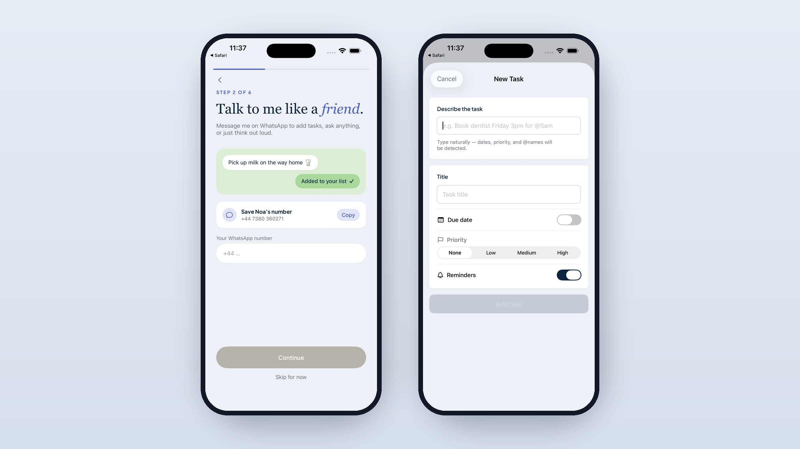
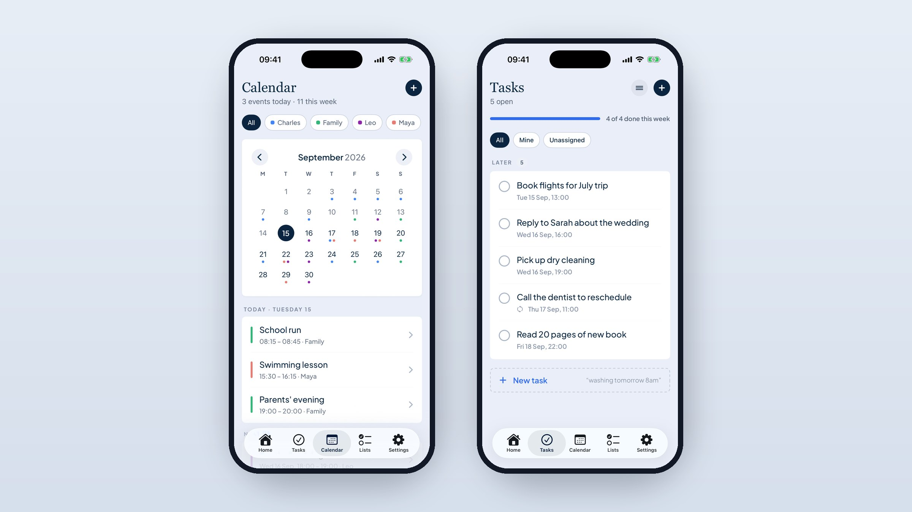
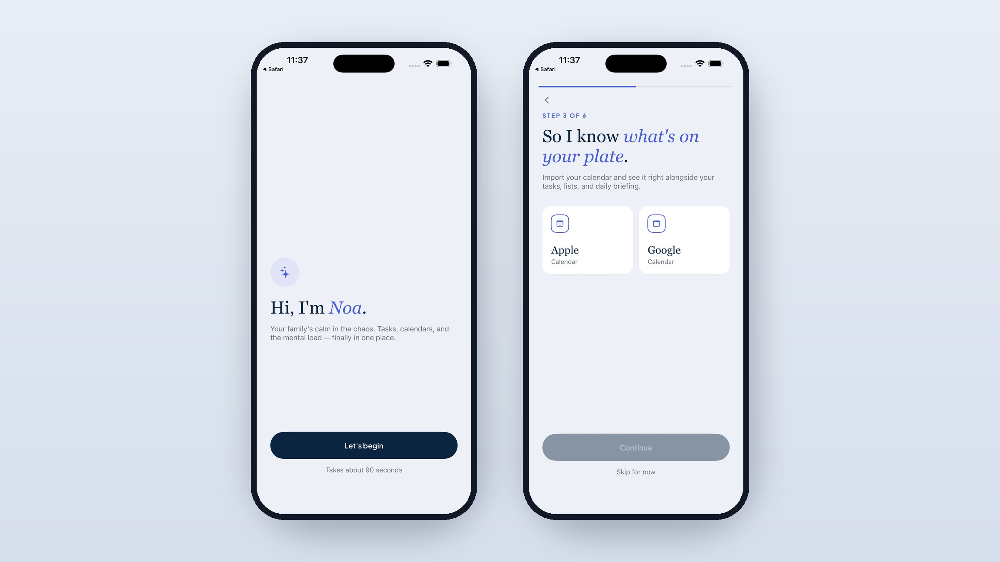

Managing everyday life is fragmented and mentally taxing
Information is spread across calendars, notes, messages, and mental load, usually held by one person
Coordination between partners or families is inconsistent
Existing tools are either too simple (notes apps) or too complex (Notion-style systems)
Creating structure requires effort before any value is realised
THE RESULTmissed events ("you didn't tell me?"), uneven mental load across households, and constant low-level friction.
Let users think naturally, and let the system handle structure.
Natural language as the primary interface
Users input tasks, events, or lists in plain language: "Add dentist next Tuesday at 3pm for family", "Pick up milk and bananas", "Remind me Phoebe has non-uniform day Friday". The system parses intent, extracts key details (date, time, person, context), and assigns or categorises automatically. No manual setup, no rigid input flows, no cognitive friction. The same works outside the app: message Noa on WhatsApp and it lands on the right list, or use Ask Noa to change things in plain language ("move my late tasks").

Unifying tasks, calendar, and lists
Instead of separate tools, Noa treats everything as part of one shared system: tasks can become events, notes can become actionable items, lists can be shared and assigned. The design focus: avoid duplication, maintain flexibility without complexity, keep the system understandable at a glance.
Shared context for families & couples
Designed for multiple users from the start: assign tasks to specific people, shared visibility across the household, clear ownership of responsibilities. The key goal: reduce reliance on one person holding everything.

AI in the product and in the build
AI isn't just a feature; it's how the product was made. In-product: natural language parsing, smart categorisation and structuring. In development: rapid prototyping with Claude and Cursor, iterating on flows quickly without over-specifying in Figma, and exploring agent-led workflows for faster UI iteration.
Designing for real behaviour
Quick capture over structured input. Shared accountability over personal organisation. Low friction over feature depth. One-tap capture flows, minimal required input, and defaults that just work. Onboarding takes about 90 seconds and every step can be skipped.

- Designed, built, and shipped an end-to-end consumer product from concept to the App Store
- Live on the App Store with over 200 users actively using the app and providing feedback
- Redesigned end to end since launch, across every screen
- Validated demand around shared coordination, natural language input, and reducing mental load in households
- Established a flexible foundation for personal use, couples, and family plans
- 01The biggest problem isn't organisation, it's coordination
- 02Natural language dramatically lowers the barrier to entry
- 03Shared systems only work when ownership is visible and balanced
- 04Speed of iteration is critical when defining new interaction models
- 05AI is most valuable when it removes friction, not adds complexity
VenueScanner Dashboard
One place for hosts to run bookings and enquiries